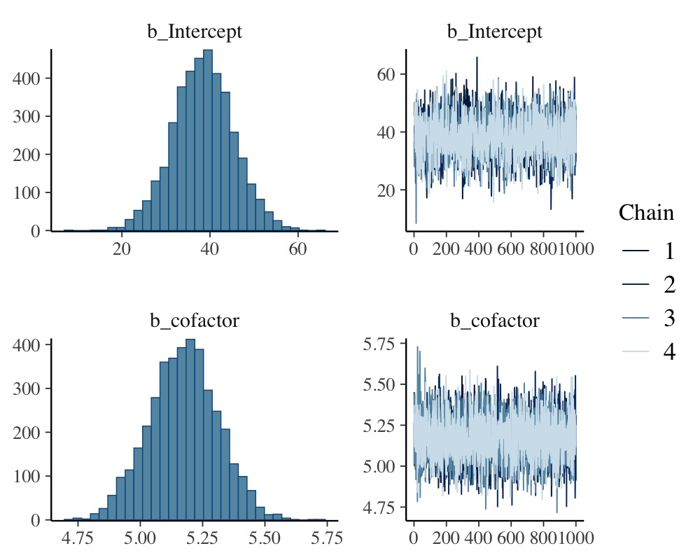
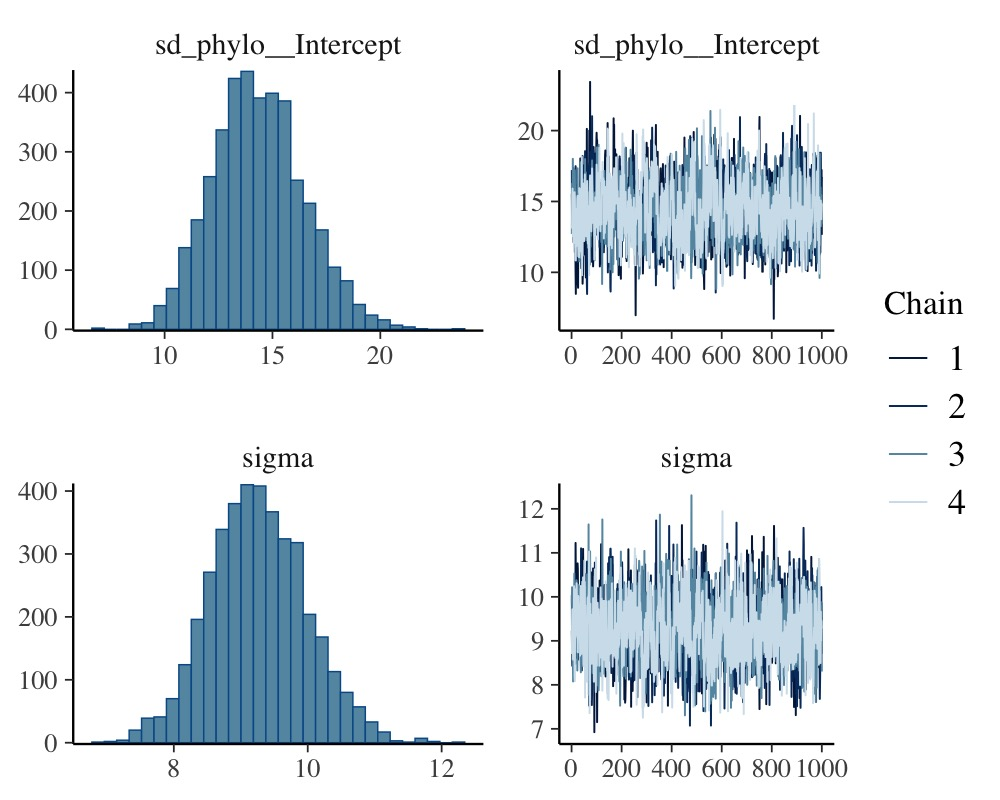
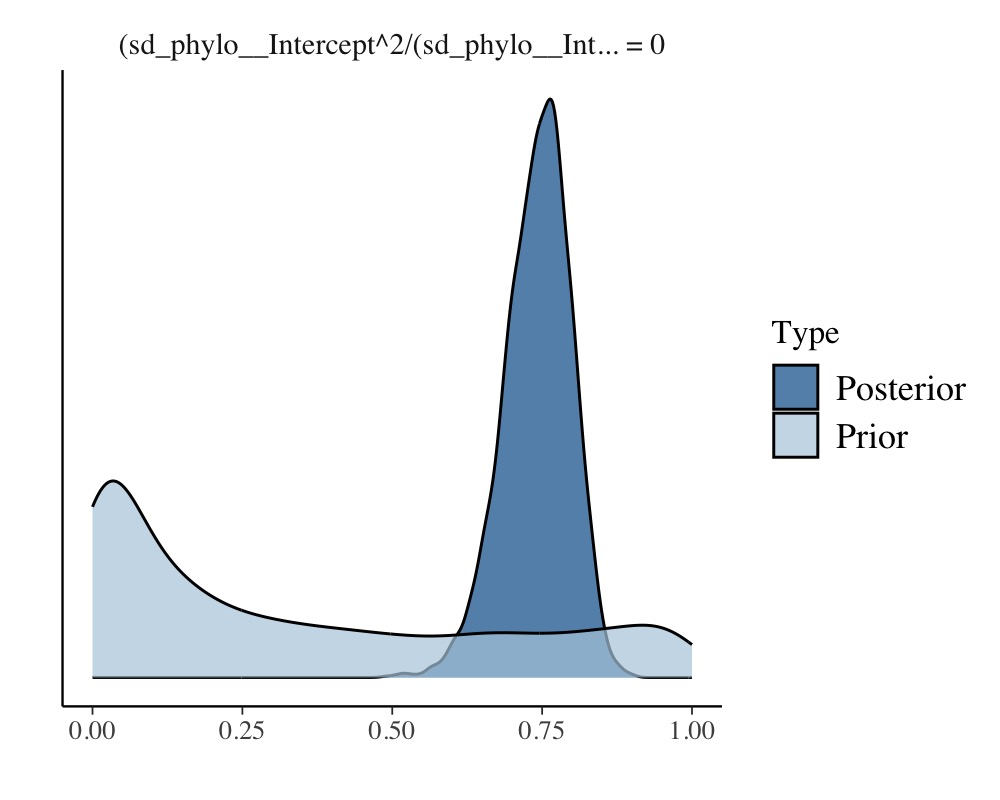
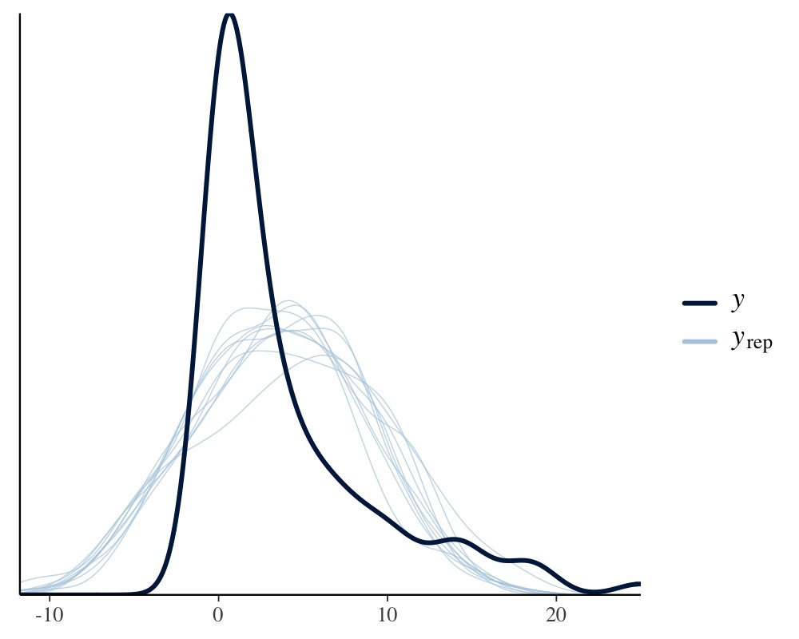

Estimating Phylogenetic Multilevel Models with brms
Paul Bürkner
2020-05-27
Source:vignettes/brms_phylogenetics.Rmd
brms_phylogenetics.RmdIntroduction
In the present vignette, we want to discuss how to specify phylogenetic multilevel models using brms. These models are relevant in evolutionary biology when data of many species are analyzed at the same time. The usual approach would be to model species as a grouping factor in a multilevel model and estimate varying intercepts (and possibly also varying slopes) over species. However, species are not independent as they come from the same phylogenetic tree and we thus have to adjust our model to incorporate this dependency. The examples discussed here are from chapter 11 of the book Modern Phylogenetic Comparative Methods and the application in Evolutionary Biology (de Villemeruil & Nakagawa, 2014). The necessary data can be downloaded from the corresponding website (http://www.mpcm-evolution.com/). Some of these models may take a few minutes to fit.
A Simple Phylogenetic Model
Assume we have measurements of a phenotype, phen (say the body size), and a cofactor variable (say the temperature of the environment). We prepare the data using the following code.
phylo <- ape::read.nexus("https://paul-buerkner.github.io/data/phylo.nex") data_simple <- read.table( "https://paul-buerkner.github.io/data/data_simple.txt", header = TRUE ) head(data_simple)
phen cofactor phylo
1 107.06595 10.309588 sp_1
2 79.61086 9.690507 sp_2
3 116.38186 15.007825 sp_3
4 143.28705 19.087673 sp_4
5 139.60993 15.658404 sp_5
6 68.50657 6.005236 sp_6The phylo object contains information on the relationship between species. Using this information, we can construct a covariance matrix of species (Hadfield & Nakagawa, 2010).
A <- ape::vcv.phylo(phylo)
Now we are ready to fit our first phylogenetic multilevel model:
model_simple <- brm( phen ~ cofactor + (1|gr(phylo, cov = A)), data = data_simple, family = gaussian(), data2 = list(A = A), prior = c( prior(normal(0, 10), "b"), prior(normal(0, 50), "Intercept"), prior(student_t(3, 0, 20), "sd"), prior(student_t(3, 0, 20), "sigma") ) )
With the exception of (1|gr(phylo, cov = A)) instead of (1|phylo) this is a basic multilevel model with a varying intercept over species (phylo is an indicator of species in this data set). However, by using cov = A in the gr function, we make sure that species are correlated as specified by the covariance matrix A. We pass A itself via the data2 argument which can be used for any kinds of data that does not fit into the reqular structure of the data argument. Setting priors is not required for achieving good convergence for this model, but it improves sampling speed a bit. After fitting, the results can be investigated in detail.
summary(model_simple)
Family: gaussian
Links: mu = identity; sigma = identity
Formula: phen ~ cofactor + (1 | gr(phylo, cov = A))
Data: data_simple (Number of observations: 200)
Samples: 4 chains, each with iter = 2000; warmup = 1000; thin = 1;
total post-warmup samples = 4000
Group-Level Effects:
~phylo (Number of levels: 200)
Estimate Est.Error l-95% CI u-95% CI Rhat Bulk_ESS Tail_ESS
sd(Intercept) 14.53 2.15 10.47 18.88 1.00 1060 2086
Population-Level Effects:
Estimate Est.Error l-95% CI u-95% CI Rhat Bulk_ESS Tail_ESS
Intercept 38.07 6.92 24.50 51.65 1.00 2334 2570
cofactor 5.18 0.14 4.91 5.44 1.00 5953 3699
Family Specific Parameters:
Estimate Est.Error l-95% CI u-95% CI Rhat Bulk_ESS Tail_ESS
sigma 9.22 0.73 7.88 10.76 1.00 1446 2341
Samples were drawn using sampling(NUTS). For each parameter, Bulk_ESS
and Tail_ESS are effective sample size measures, and Rhat is the potential
scale reduction factor on split chains (at convergence, Rhat = 1).plot(model_simple, N = 2, ask = FALSE)

plot(conditional_effects(model_simple), points = TRUE)
The so called phylogenetic signal (often symbolize by \(\lambda\)) can be computed with the hypothesis method and is roughly \(\lambda = 0.7\) for this example.
hyp <- "sd_phylo__Intercept^2 / (sd_phylo__Intercept^2 + sigma^2) = 0" (hyp <- hypothesis(model_simple, hyp, class = NULL))
Hypothesis Tests for class :
Hypothesis Estimate Est.Error CI.Lower CI.Upper Evid.Ratio Post.Prob Star
1 (sd_phylo__Interc... = 0 0.7 0.08 0.51 0.84 NA NA *
---
'CI': 90%-CI for one-sided and 95%-CI for two-sided hypotheses.
'*': For one-sided hypotheses, the posterior probability exceeds 95%;
for two-sided hypotheses, the value tested against lies outside the 95%-CI.
Posterior probabilities of point hypotheses assume equal prior probabilities.plot(hyp)

Note that the phylogenetic signal is just a synonym of the intra-class correlation (ICC) used in the context phylogenetic analysis.
A Phylogenetic Model with Repeated Measurements
Often, we have multiple observations per species and this allows to fit more complicated phylogenetic models.
data_repeat <- read.table( "https://paul-buerkner.github.io/data/data_repeat.txt", header = TRUE ) data_repeat$spec_mean_cf <- with(data_repeat, sapply(split(cofactor, phylo), mean)[phylo]) head(data_repeat)
phen cofactor species phylo spec_mean_cf
1 107.41919 11.223724 sp_1 sp_1 10.309588
2 109.16403 9.805934 sp_1 sp_1 10.309588
3 91.88672 10.308423 sp_1 sp_1 10.309588
4 121.54341 8.355349 sp_1 sp_1 10.309588
5 105.31638 11.854510 sp_1 sp_1 10.309588
6 64.99859 4.314015 sp_2 sp_2 3.673914The variable spec_mean_cf just contains the mean of the cofactor for each species. The code for the repeated measurement phylogenetic model looks as follows:
model_repeat1 <- brm( phen ~ spec_mean_cf + (1|gr(phylo, cov = A)) + (1|species), data = data_repeat, family = gaussian(), data2 = list(A = A), prior = c( prior(normal(0,10), "b"), prior(normal(0,50), "Intercept"), prior(student_t(3,0,20), "sd"), prior(student_t(3,0,20), "sigma") ), sample_prior = TRUE, chains = 2, cores = 2, iter = 4000, warmup = 1000 )
The variables phylo and species are identical as they are both identifiers of the species. However, we model the phylogenetic covariance only for phylo and thus the species variable accounts for any specific effect that would be independent of the phylogenetic relationship between species (e.g., environmental or niche effects). Again we can obtain model summaries as well as estimates of the phylogenetic signal.
summary(model_repeat1)
Family: gaussian
Links: mu = identity; sigma = identity
Formula: phen ~ spec_mean_cf + (1 | gr(phylo, cov = A)) + (1 | species)
Data: data_repeat (Number of observations: 1000)
Samples: 2 chains, each with iter = 4000; warmup = 1000; thin = 1;
total post-warmup samples = 6000
Group-Level Effects:
~phylo (Number of levels: 200)
Estimate Est.Error l-95% CI u-95% CI Rhat Bulk_ESS Tail_ESS
sd(Intercept) 16.42 1.93 12.89 20.53 1.00 1126 914
~species (Number of levels: 200)
Estimate Est.Error l-95% CI u-95% CI Rhat Bulk_ESS Tail_ESS
sd(Intercept) 4.99 0.88 3.05 6.61 1.00 780 704
Population-Level Effects:
Estimate Est.Error l-95% CI u-95% CI Rhat Bulk_ESS Tail_ESS
Intercept 36.14 7.92 20.61 51.44 1.00 3672 3260
spec_mean_cf 5.10 0.10 4.90 5.30 1.00 8346 4733
Family Specific Parameters:
Estimate Est.Error l-95% CI u-95% CI Rhat Bulk_ESS Tail_ESS
sigma 8.11 0.20 7.72 8.52 1.00 4812 4160
Samples were drawn using sampling(NUTS). For each parameter, Bulk_ESS
and Tail_ESS are effective sample size measures, and Rhat is the potential
scale reduction factor on split chains (at convergence, Rhat = 1).hyp <- paste( "sd_phylo__Intercept^2 /", "(sd_phylo__Intercept^2 + sd_species__Intercept^2 + sigma^2) = 0" ) (hyp <- hypothesis(model_repeat1, hyp, class = NULL))
Hypothesis Tests for class :
Hypothesis Estimate Est.Error CI.Lower CI.Upper Evid.Ratio Post.Prob Star
1 (sd_phylo__Interc... = 0 0.74 0.06 0.62 0.84 0 0 *
---
'CI': 90%-CI for one-sided and 95%-CI for two-sided hypotheses.
'*': For one-sided hypotheses, the posterior probability exceeds 95%;
for two-sided hypotheses, the value tested against lies outside the 95%-CI.
Posterior probabilities of point hypotheses assume equal prior probabilities.plot(hyp)

So far, we have completely ignored the variability of the cofactor within species. To incorporate this into the model, we define
data_repeat$within_spec_cf <- data_repeat$cofactor - data_repeat$spec_mean_cf
and then fit it again using within_spec_cf as an additional predictor.
model_repeat2 <- update( model_repeat1, formula = ~ . + within_spec_cf, newdata = data_repeat, chains = 2, cores = 2, iter = 4000, warmup = 1000 )
The results are almost unchanged, with apparently no relationship between the phenotype and the within species variance of cofactor.
summary(model_repeat2)
Family: gaussian
Links: mu = identity; sigma = identity
Formula: phen ~ spec_mean_cf + (1 | gr(phylo, cov = A)) + (1 | species) + within_spec_cf
Data: data_repeat (Number of observations: 1000)
Samples: 2 chains, each with iter = 4000; warmup = 1000; thin = 1;
total post-warmup samples = 6000
Group-Level Effects:
~phylo (Number of levels: 200)
Estimate Est.Error l-95% CI u-95% CI Rhat Bulk_ESS Tail_ESS
sd(Intercept) 16.46 1.91 12.90 20.47 1.00 1320 1676
~species (Number of levels: 200)
Estimate Est.Error l-95% CI u-95% CI Rhat Bulk_ESS Tail_ESS
sd(Intercept) 4.98 0.86 3.18 6.60 1.00 772 1173
Population-Level Effects:
Estimate Est.Error l-95% CI u-95% CI Rhat Bulk_ESS Tail_ESS
Intercept 36.40 7.82 20.90 51.92 1.00 4038 3729
spec_mean_cf 5.10 0.10 4.89 5.29 1.00 8290 4430
within_spec_cf -0.06 0.19 -0.43 0.31 1.00 9756 3345
Family Specific Parameters:
Estimate Est.Error l-95% CI u-95% CI Rhat Bulk_ESS Tail_ESS
sigma 8.11 0.20 7.72 8.52 1.00 5333 3756
Samples were drawn using sampling(NUTS). For each parameter, Bulk_ESS
and Tail_ESS are effective sample size measures, and Rhat is the potential
scale reduction factor on split chains (at convergence, Rhat = 1).Also, the phylogenetic signal remains more or less the same.
hyp <- paste( "sd_phylo__Intercept^2 /", "(sd_phylo__Intercept^2 + sd_species__Intercept^2 + sigma^2) = 0" ) (hyp <- hypothesis(model_repeat2, hyp, class = NULL))
Hypothesis Tests for class :
Hypothesis Estimate Est.Error CI.Lower CI.Upper Evid.Ratio Post.Prob Star
1 (sd_phylo__Interc... = 0 0.74 0.06 0.62 0.84 0 0 *
---
'CI': 90%-CI for one-sided and 95%-CI for two-sided hypotheses.
'*': For one-sided hypotheses, the posterior probability exceeds 95%;
for two-sided hypotheses, the value tested against lies outside the 95%-CI.
Posterior probabilities of point hypotheses assume equal prior probabilities.A Phylogenetic Meta-Analysis
Let’s say we have Fisher’s z-transformated correlation coefficients \(Zr\) per species along with corresponding sample sizes (e.g., correlations between male coloration and reproductive success):
data_fisher <- read.table( "https://paul-buerkner.github.io/data/data_effect.txt", header = TRUE ) data_fisher$obs <- 1:nrow(data_fisher) head(data_fisher)
Zr N phylo obs
1 0.28917549 13 sp_1 1
2 0.02415579 40 sp_2 2
3 0.19513651 39 sp_3 3
4 0.09831239 40 sp_4 4
5 0.13780152 66 sp_5 5
6 0.13710587 41 sp_6 6We assume the sampling variance to be known and as \(V(Zr) = \frac{1}{N - 3}\) for Fisher’s values, where \(N\) is the sample size per species. Incorporating the known sampling variance into the model is straight forward. One has to keep in mind though, that brms requires the sampling standard deviation (square root of the variance) as input instead of the variance itself. The group-level effect of obs represents the residual variance, which we have to model explicitly in a meta-analytic model.
model_fisher <- brm( Zr | se(sqrt(1 / (N - 3))) ~ 1 + (1|gr(phylo, cov = A)) + (1|obs), data = data_fisher, family = gaussian(), data2 = list(A = A), prior = c( prior(normal(0, 10), "Intercept"), prior(student_t(3, 0, 10), "sd") ), control = list(adapt_delta = 0.95), chains = 2, cores = 2, iter = 4000, warmup = 1000 )
A summary of the fitted model is obtained via
summary(model_fisher)
Family: gaussian
Links: mu = identity; sigma = identity
Formula: Zr | se(sqrt(1/(N - 3))) ~ 1 + (1 | gr(phylo, cov = A)) + (1 | obs)
Data: data_fisher (Number of observations: 200)
Samples: 2 chains, each with iter = 4000; warmup = 1000; thin = 1;
total post-warmup samples = 6000
Group-Level Effects:
~obs (Number of levels: 200)
Estimate Est.Error l-95% CI u-95% CI Rhat Bulk_ESS Tail_ESS
sd(Intercept) 0.05 0.03 0.00 0.11 1.00 629 1477
~phylo (Number of levels: 200)
Estimate Est.Error l-95% CI u-95% CI Rhat Bulk_ESS Tail_ESS
sd(Intercept) 0.06 0.04 0.00 0.15 1.00 550 801
Population-Level Effects:
Estimate Est.Error l-95% CI u-95% CI Rhat Bulk_ESS Tail_ESS
Intercept 0.16 0.04 0.08 0.25 1.00 1982 1474
Family Specific Parameters:
Estimate Est.Error l-95% CI u-95% CI Rhat Bulk_ESS Tail_ESS
sigma 0.00 0.00 0.00 0.00 1.00 6000 6000
Samples were drawn using sampling(NUTS). For each parameter, Bulk_ESS
and Tail_ESS are effective sample size measures, and Rhat is the potential
scale reduction factor on split chains (at convergence, Rhat = 1).plot(model_fisher)

The meta-analytic mean (i.e., the model intercept) is \(0.16\) with a credible interval of \([0.08, 0.25]\). Thus the mean correlation across species is positive according to the model.
A phylogenetic count-data model
Suppose that we analyze a phenotype that consists of counts instead of being a continuous variable. In such a case, the normality assumption will likely not be justified and it is recommended to use a distribution explicitely suited for count data, for instance the Poisson distribution. The following data set (again retrieved from mpcm-evolution.org) provides an example.
data_pois <- read.table( "https://paul-buerkner.github.io/data/data_pois.txt", header = TRUE ) data_pois$obs <- 1:nrow(data_pois) head(data_pois)
phen_pois cofactor phylo obs
1 1 7.8702830 sp_1 1
2 0 3.4690529 sp_2 2
3 1 2.5478774 sp_3 3
4 14 18.2286628 sp_4 4
5 1 2.5302806 sp_5 5
6 1 0.5145559 sp_6 6As the poisson distribution does not have a natural overdispersion parameter, we model the residual variance via the group-level effects of obs (e.g., see Lawless, 1987).
model_pois <- brm( phen_pois ~ cofactor + (1|gr(phylo, cov = A)) + (1|obs), data = data_pois, family = poisson("log"), data2 = list(A = A), chains = 2, cores = 2, iter = 4000, control = list(adapt_delta = 0.95) )
Again, we obtain a summary of the fitted model via
summary(model_pois)
Family: poisson
Links: mu = log
Formula: phen_pois ~ cofactor + (1 | gr(phylo, cov = A)) + (1 | obs)
Data: data_pois (Number of observations: 200)
Samples: 2 chains, each with iter = 4000; warmup = 2000; thin = 1;
total post-warmup samples = 4000
Group-Level Effects:
~obs (Number of levels: 200)
Estimate Est.Error l-95% CI u-95% CI Rhat Bulk_ESS Tail_ESS
sd(Intercept) 0.19 0.08 0.03 0.34 1.01 667 806
~phylo (Number of levels: 200)
Estimate Est.Error l-95% CI u-95% CI Rhat Bulk_ESS Tail_ESS
sd(Intercept) 0.18 0.10 0.02 0.42 1.00 741 992
Population-Level Effects:
Estimate Est.Error l-95% CI u-95% CI Rhat Bulk_ESS Tail_ESS
Intercept -2.09 0.21 -2.52 -1.68 1.00 1804 1738
cofactor 0.25 0.01 0.23 0.27 1.00 2913 2628
Samples were drawn using sampling(NUTS). For each parameter, Bulk_ESS
and Tail_ESS are effective sample size measures, and Rhat is the potential
scale reduction factor on split chains (at convergence, Rhat = 1).plot(conditional_effects(model_pois), points = TRUE)

Now, assume we ignore the fact that the phenotype is count data and fit a linear normal model instead.
model_normal <- brm( phen_pois ~ cofactor + (1|gr(phylo, cov = A)), data = data_pois, family = gaussian(), data2 = list(A = A), chains = 2, cores = 2, iter = 4000, control = list(adapt_delta = 0.95) )
summary(model_normal)
Family: gaussian
Links: mu = identity; sigma = identity
Formula: phen_pois ~ cofactor + (1 | gr(phylo, cov = A))
Data: data_pois (Number of observations: 200)
Samples: 2 chains, each with iter = 4000; warmup = 2000; thin = 1;
total post-warmup samples = 4000
Group-Level Effects:
~phylo (Number of levels: 200)
Estimate Est.Error l-95% CI u-95% CI Rhat Bulk_ESS Tail_ESS
sd(Intercept) 0.70 0.50 0.03 1.87 1.00 1040 1472
Population-Level Effects:
Estimate Est.Error l-95% CI u-95% CI Rhat Bulk_ESS Tail_ESS
Intercept -3.04 0.63 -4.29 -1.85 1.00 3042 2761
cofactor 0.68 0.04 0.60 0.76 1.00 6336 3126
Family Specific Parameters:
Estimate Est.Error l-95% CI u-95% CI Rhat Bulk_ESS Tail_ESS
sigma 3.44 0.18 3.11 3.80 1.00 4332 2601
Samples were drawn using sampling(NUTS). For each parameter, Bulk_ESS
and Tail_ESS are effective sample size measures, and Rhat is the potential
scale reduction factor on split chains (at convergence, Rhat = 1).We see that cofactor has a positive relationship with the phenotype in both models. One should keep in mind, though, that the estimates of the Poisson model are on the log-scale, as we applied the canonical log-link function in this example. Therefore, estimates are not comparable to a linear normal model even if applied to the same data. What we can compare, however, is the model fit, for instance graphically via posterior predictive checks.
pp_check(model_pois)

pp_check(model_normal)

Apparently, the distribution of the phenotype predicted by the Poisson model resembles the original distribution of the phenotype pretty closely, while the normal models fails to do so. We can also apply leave-one-out cross-validation for direct numerical comparison of model fit.
loo(model_pois, model_normal)
Output of model 'model_pois':
Computed from 4000 by 200 log-likelihood matrix
Estimate SE
elpd_loo -348.1 17.0
p_loo 30.3 3.5
looic 696.3 33.9
------
Monte Carlo SE of elpd_loo is NA.
Pareto k diagnostic values:
Count Pct. Min. n_eff
(-Inf, 0.5] (good) 172 86.0% 438
(0.5, 0.7] (ok) 25 12.5% 140
(0.7, 1] (bad) 3 1.5% 206
(1, Inf) (very bad) 0 0.0% <NA>
See help('pareto-k-diagnostic') for details.
Output of model 'model_normal':
Computed from 4000 by 200 log-likelihood matrix
Estimate SE
elpd_loo -535.8 15.8
p_loo 10.0 2.2
looic 1071.7 31.6
------
Monte Carlo SE of elpd_loo is 0.1.
Pareto k diagnostic values:
Count Pct. Min. n_eff
(-Inf, 0.5] (good) 199 99.5% 728
(0.5, 0.7] (ok) 1 0.5% 633
(0.7, 1] (bad) 0 0.0% <NA>
(1, Inf) (very bad) 0 0.0% <NA>
All Pareto k estimates are ok (k < 0.7).
See help('pareto-k-diagnostic') for details.
Model comparisons:
elpd_diff se_diff
model_pois 0.0 0.0
model_normal -187.7 17.9 Since smaller values of loo indicate better fit, it is again evident that the Poisson model fits the data better than the normal model. Of course, the Poisson model is not the only reasonable option here. For instance, you could use a negative binomial model (via family negative_binomial), which already contains an overdispersion parameter so that modeling a varying intercept of obs becomes obsolete.
Phylogenetic models with multiple group-level effects
In the above examples, we have only used a single group-level effect (i.e., a varying intercept) for the phylogenetic grouping factors. In brms, it is also possible to estimate multiple group-level effects (e.g., a varying intercept and a varying slope) for these grouping factors. However, it requires repeatedly computing Kronecker products of covariance matrices while fitting the model. This will be very slow especially when the grouping factors have many levels and matrices are thus large.
References
de Villemeruil P. & Nakagawa, S. (2014) General quantitative genetic methods for comparative biology. In: Modern phylogenetic comparative methods and their application in evolutionary biology: concepts and practice (ed. Garamszegi L.) Springer, New York. pp. 287-303.
Hadfield, J. D. & Nakagawa, S. (2010) General quantitative genetic methods for comparative biology: phylogenies, taxonomies, and multi-trait models for continuous and categorical characters. Journal of Evolutionary Biology. 23. 494-508.
Lawless, J. F. (1987). Negative binomial and mixed Poisson regression. Canadian Journal of Statistics, 15(3), 209-225.